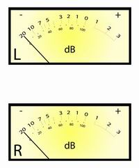

|
NO ME SALEN
EJERCICIOS RESUELTOS DE FÍSICA Y BIOFÍSICA
Ondas, sonido
|
|

|
Intensidad y nivel de intensidad sonora
Escala de decibeles (dB)
|
|
La intensidad sonora, I, y el nivel de intensidad sonora, β, son básicamente la misma cosa, miden el mismo fenómeno: cuán intenso es un sonido en el lugar en que se escucha. En el lenguaje coloquilal se lo llama volumen.
Pero ocurre que entre el sonido más suave que podemos escuchar y el más fuerte que soportamos, hay un un factor de un billón (1.000.000.000.000); es decir el más intenso soportable es un billón de veces más intenso que el más suave. |
|
|
| Intensidades de sonido típicas (en W/m²) |
| Al lado de una turbina de avión |
10 |
| Umbral de dolor |
1 |
| Discoteca moderada |
0,1 |
| En una habitación con música fuerte |
0,01 |
| En medio del tráfico intenso |
0,001 |
| Concierto en un teatro |
0,000.1 |
| Música ambiental |
0,000.001 |
| Conversando en privado |
0,000.000.1 |
| Murmullos en una biblioteca |
0,000.000.001 |
| Susurros |
0,000.000.000.1 |
| Ruido de hojas |
0,000.000.000.01 |
| Umbral de sensibilidad |
0,000.000.000.001 |
|
|
En el medio se desarrolla nuestra audición. Eso hace que el rango de intensidades sonoras interesantes sea enorme e incómodo para describirlo a la usanza común y corriente. A cada rato tendríamos que estar colocando catidades industriales de ceros y las operaciones se harían escabrosas.
Pero hay otro motivo todavía más importante que hace que desistamos de la escala común y nos busquemos una más adecuada. Es que nuestro oído no se comporta de modo uniforme a lo largo de ese enorme rango de intensidades. Nuestra sensibilidad para distinguir dos sonidos de diferente intensidad es proporcional a la intensidad de los sonidos que queremos comparar. |
|
|
|
O sea: cuando estamos escuchando sonidos muy suaves podemos distinguir pequeñas variaciones de intensidad. En cambio, cuando escuchamos sonidos a mucho volumen sólo distinguimos diferencias de volumen muy altas.
Tenemos una solución muy práctica para este tipo de fenómenos de rango tan extendido, que consiste en el uso de escalas logarítmicas. La escala logarítmica de intensidades se denomina nivel de intensidad. La unidad de esa escala es el decibel, (dB). Acá tenés la misma tabla de arriba, pero medida en la escala de decibeles. |
|
|
| Intensidades de sonido típicas (en dB ) |
| Al lado de una turbina de avión |
130 |
| Umbral de dolor |
120 |
| Discoteca moderada |
110 |
| En una habitación con música fuerte |
100 |
| En medio del tráfico intenso |
90 |
| Concierto en un teatro |
80 |
| Música ambiental |
60 |
| Conversando en privado |
50 |
| Murmullos en una biblioteca |
30 |
| Susurros |
20 |
| Ruido de hojas |
10 |
| Umbral de sensibilidad |
0 |
|
|
El umbral de sensibilidad, I0, se usa como valor de referencia para definir el decibel.
I0 = 10-12 W/m²
Contra este valor de referencia (por ser el menor valor que podemos percibir con nuestros oídos), se compara cualquier otro, I, realizando un cociente:
comparación: ( I / I0)
A ese cociente (que como ya te conté antes puede valer hasta 1 billón, o más) se le aplica logaritmo. Así se define el nivel de intensidad sonora, β, que como todo logaritmo no tiene unidades, y le inventamos una unidad ad-hoc para que los lectores sepan a qué nos estamos refiriendo: el decibel (dB). |
|
|
|
| Hacé algunas pruebas con la calculadora científica para familarizarte con las escala de medición logarítmica. |
|
|
| |
β = 10 log ( I / I0) (en dB) |
|
|
|
|
| La escala de nivel de intensidad sonora no sólo es más práctica, también se ajusta mejor a la fisiología y la psicología de la audición. |
|
|
| CHISMES IMPORTANTES |
|
|
- Los sonidos intensos cercanos al umbral de dolor producen daños irreparables en el sistema de audición. Los daños son imperceptibles, pero acumulativos. Cuando nos queremos dar cuenta... ya es tarde. En muchos lados se ha adquirido la pésima costumbre de sonorizar recintos con ruido insalubre: pistas de baile de discotecas, recitales, etc. Cuando las personas salen del lugar escuchan pitidos agudos en los oídos... esa es la señal inconfundible del daño irreparable: se han perdido decenas de células sensitivas que ya nunca van a volver a funcionar. Se avecina una sordera prematura que en ambientes sanos recién llega a los 70 u 80 años.
|
-
Las partituras musicales indican la intensidad del sonido con las iniciales pp (pianísimo), p (piano), mp (mezzopiano), mf (mezzoforte), f (forte), ff (fortísimo).
El cuadro muestra los niveles de intensidad aproximados medidos en decibeles. Sin embargo cada instrumento tiene un rango limitado. Y por su puesto depende de la distancia entre el ejecutante y el oyente, y de la acústica del lugar de la ejecusión.
|
| Intensidades musicales (en dB ) |
| pp (pianísimo) |
40 |
| p (piano) |
50 |
| mp (mezzopiano) |
60 |
| mf (mezzoforte) |
70 |
| f (forte) |
80 |
| ff (fortísimo). |
90-100 |
|
- 1 decibel, es la variación de intensidad mínima que pueden distinguir nuestros oídos. Pero se trata -claro- de un valor subjetivo y promedio dentro de la población. Lo curioso es que físicamente 1 dB puede corresponder a una variación de 1 W/m² o a una variación 1 billón de veces menor, 10-12 W/m², dependiendo se si hablamos de sonidos fuertes o de sonidos débiles. Nuestro sistema de audición y el cerebro se comportan logarítmicamente.
|
- Los artefactos electrónicos suelen tener indicadores volumen medido en decibeles o en otra escala arbitraria. El instrumento indicador se llama vúmetro. Su lectura suele inducir a error por dos motivos.
El primer motivo es obvio: la intensidad sonora (y el nivel de intensidad sonora) son magnitudes que dependen fundamentalmente de la potencia de la funete de y de la distancia entre la fuente y el lugar (donde se pone la oreja).
El segundo motivo es que la escala de decibleles y la arbitraria no tienen ninguna correlación. El cero de la escala arbitraria indica el nivel de sonoridad (potencia) y funcionamiento óptimo para el artefacto.
|
 |
|
|
 |
| PREGUNTAS CAPCIOSAS |
|
- ¿Cuál es la relación que existe entre la frecuencia de un sonido y su nivel de intensidad respecto de la percepción auditiva?
- ¿Por qué cuando vemos a una persona escuchando su walkman a todo volumen sólo percibimos los sonidos agudos? ¿Por qué cuando vemos pasar una auto con un loquito adentro escuchando música a un volumen como para alegrar al vecindario, sólo escuchamos los graves?
- ¿Quién es el tío de la foto?
|
|
| |
Algunos derechos reservados.
Se permite su reproducción citando la fuente.
A veces me pregunto si es tan necesario maltratar de ese modo a la cumbia. Última actualización abr-09. Buenos Aires, Argentina. |
|
|
 |
|
|
|
|